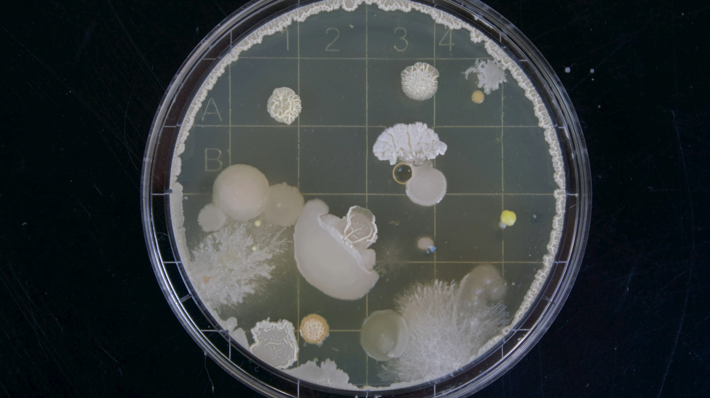
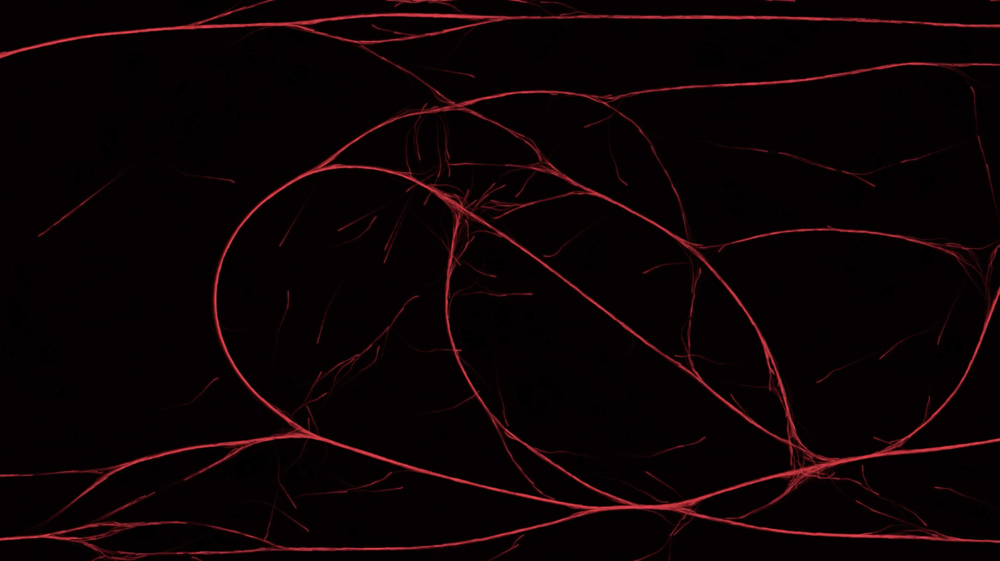
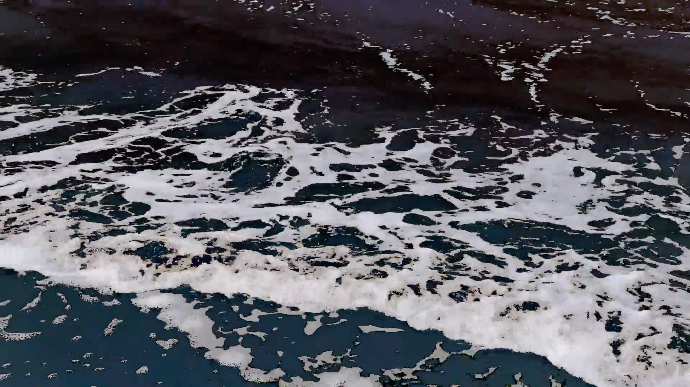
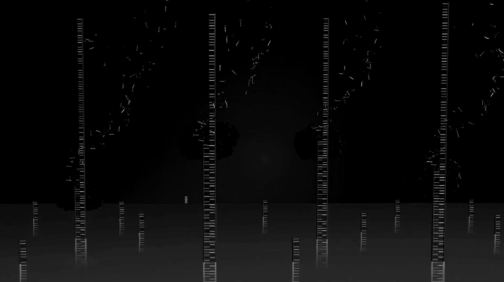
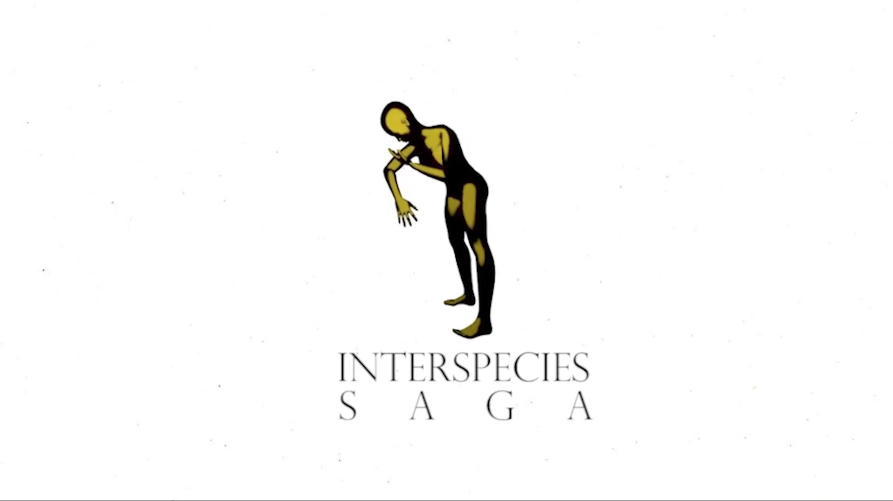

Episode I: From Underwater to Outerspace is composed of six units of information and enquiries that cross the Earth, penetrating geological strata and geographical terrains through a stigmergic lens, with particular attention to its
relationship with concepts of empathy. These units take the form of videos selected from the work of first year Master Students at the Design Academy Eindhoven, developed between March-June 2020 in the program Stigmergy Collaborative
Project.
This episode will be launched here on 26 February 2021 at 2pm CET through radio conversations with the participants, hosted by Good Times Bad Times.
Programme:
14:00–14:30 (In)visible Other
14:30–15:00 E-cotuning
15:00–15:30 The Observer and the Observed
15:30–16:00 001 Bank
16:00–16:30 Interspecies Saga
16:30–17:00 The Final Cut

(In)visible Other
4'20" Essay video zooming in modes of seeing through a Metalens
System: visual communication
Agents: microorganisms
Environment: surfaces of bodies
Scale:
Design Tool: Metalens
The era of the unpredictable calls for a new understanding of the planet, a new perception and relation with the species that cohabit it with us. We perceive life to fall into two broad categories, the microbes and macrobes, and then pay most
of the attention to the latter. But the superior human is no longer. By zooming out and becoming small, we are giving room to the other. Through zooming out, earth looks as small as any human, and any human as any microbe. Microbes are the
dominant life form on the planet and the dominant life form within us. Will making them visible transform our understanding and relation to them?
The video takes the lens as a fundamental frame through which we explore reality and questions the human capacity of knowing by reflecting on the accessibility of prosthetic devices as everyday tools of observation. Borrowing from the
scientific community a more powerful lens to see the world, the movie imagines a Metalens accessible to everyday use to make visible the other two-thirds of life on earth — microorganisms which cannot be seen without a microscope.
Project by: Laura Deschl, Beatriz Sousa, Chanbyul Park and Alexandre Varnier
Mentored by: Yvonne Droge Wendel

E-cotuning
3'37" digital animation performing E-cotuning interface
E-cotuning is an audio-visual tool meant as a bionic musical interface using the internal algorithm of the microorganism Physarum Polycephalum, also known as slime mold. Made up of millions of nuclei, all operating as one single entity, the
amoeba Physarum Polycephalum possesses neither brain nor sensory organs and bears no morphological resemblance to humans. Yet, its behaviour has some familiar characteristics—high-level network optimisation capabilities, and the ability to
learn from, and adapt to, its environment. During its foraging behaviour, the pulsation of this microorganism produces electrical activity corresponding to different physiological states. It is possible to decode its frequency by retrieving
real-time data and subsequently simulating this behaviour in an audio-visual representation.
The video is a conjunction of Physarum’s extracted frequency played back by the musician Tomás Gubbins Correa using different synthesisers, which results in an electronic symphony. Ultimately, it is an invitation to empathise with nonhuman
systems and to listen, meant as a strategy that exceeds words to better encounter other forms of communication.
Project by: Valentine Maurice, Carlos Sfeir, Soyoun Shin (Shinso) and Bianca Schick
Musician: Tomás Gubbins Correa
Animation Support: Alex Foradori
Digital Coding and Website Support: Jacopo Nardi, Michele Piobbico, The Bug Studio
Arduino Advisor and Sound Coding Support: Ko de Beer
Mentored by: Irene Stracuzzi

The Observer and the Observed
2'45" found-footage animated for a sensorial submarine dive
System: visual communication
Agents: human bodies
Environment: underwater
Scale:
Design Tool: diving mask
The nature of identity categorisation conditions us to see “the others” as the opposition of “ourselves”; as a result, division and conflicts arise from that concept, which leads to barriers and misunderstanding of one another. With the
intention of humbling human kinds, the Mask invites the wearer to observe the world in the shape of the virus. The Mask aims to reverse that dominant logic embedded in humans and provide a vision composed by the virus, the tiny and often
forgotten pieces of generic materials that are the margins of what humans consider “living things.” The tentacle-shaped sensors are attached to the Mask, which is equipped with night vision. Due to the sensors, the virus, either floating in
the ocean or bound to marine creatures, could be seen with the help of bioluminescence.
The short video is composed of a sequence of found footage, animated by newly drawn animations which simulate a fluorescent submarine vision for the human eyes to see underwater. Eventually, a reflection on “tools” as central inventions for
determining the relationship between human and nature, will emerge.
Project by: Daatje Vera Noot, Tzuyen Chen, Paula Chang
Mentored by: Yvonne Droge Wendel

001 Bank
4'41" essay video imagining a future DNA open bank
System: Bank
Agents: DNA sequences
Environment: Platform
Scale:
Design Tool: Barcode
Recently, the global market for direct-to-consumer DNA testing kits which can provide insights into ancestry and genetic health has boomed. However, often the businesses selling these services harness their customers data in an exploitative
way; taking licence from the quick tick of a ‘terms & conditions’ box to sell on their DNA data to third parties, who in turn may not have the customers best interests at heart. In the very near future it will be possible to fully sequence
the genetic data of any living organism at a cost and speed that enables it to occur at mass scale. How will all this data be handled?
The short video considers an alternative for the centralised DNA system by imagining a 001Bank. The design scenario of this future bank puts knowledge sharing and scientific and societal progress at its core, whilst also providing the
individual with greater autonomy over how their information is shared. The bank system is thought around its access key and archive tool: the barcode.
Project by: Claire Matthews, Emma Schep, Hi Kyung Eun
Mentored by: Jesse Howard

Interspecies SAGA Documentary
15'52" documentary narrating humans and animals cultural dependency
System: western cultural production
Agents: humans and animals
Environment: digital medias
Scale:
Design Tool: narrative
If we only attempt to interpret nature through the existing human narratives we have placed on it, then do we actually know what nature is? Or only what we say it is? Through an innate tendency to anthropomorphize the world around us, humans,
have over-designed nature with stories and narratives, to the point where it is difficult to understand when we are projecting our human-ideologies into the natural world and when we are not.
Interspecies Saga is a documentary studying the deep ties between humans and animals. From historical, religious, psychological, and fandom perspectives, we took a look at human ways of internalizing and externalizing nature. The movie
suggests to the audience the generation of new subjective interpretations of what nature is, and therefore to further decentralize the relationship between humans and their environment; breaking the ideological hierarchies that place humans
outside or on top of nature.
Project by: Pauline Rip, Maren Bang Tøndevold, Ramon Jimenez Cardenas
Mentored by: Michelle Kasprzak
An Internet user comes across a video from Trump congratulating Elon Musk on his Starlink constellation. They start to investigate the implications of this project. This constellation of 12,000 satellites is setting up a new global internet
network. Beyond the intention to offer Internet everywhere, even in remote areas, he notes that this project was set up to finance Elon Musk’s dream: to colonise Mars before 2030 via his other company SpaceX. In the course of his research,
this Internet user became aware of a certain lack of organisation in space (a Chinese satellite exploded voluntarily, a near-crash between ESA and Starlink, an overabundance of debris, etc.) where logically there is no room for doubt and
disorganisation. This dream territory that is space and that NASA or Elon Musk wants to sell us, does not seem to be governed by a common law. The increasing private actors in space seem to be doing as they please. Who runs what, who and how?
The movie questions a dreamy and romantic image of space through the voice of an invented activist group - The Final Cut - which statement is clear: unless communication and collaboration are used as a methodology for space exploration, the
only result will be chaos.The Final Cut believes that if space is part of the common, all members of that common should have a word in the story that is being written right now.